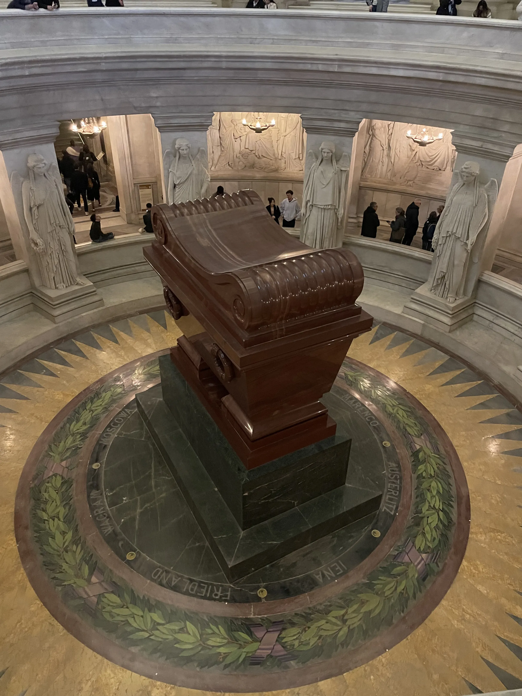
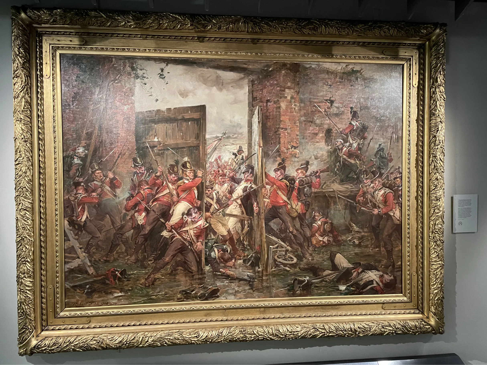

It started with Richard Sharpe
My fascination with the Napoleonic War began in my teens. I don't deny that it is an unusual interest for a young lad, but one that took hold almost by accident. While on a holiday in the Scottish Highlands, with no phone signal, I reached for Sharpe’s Tiger after it was recommended by my step dad.
I was instantly hooked. What began with the fictional stories of Richard Sharpe soon evolved into a deep dive into the non fiction history of the era. Over the years, that initial curiosity has exploded into a lifelong pursuit of the stories and artifacts of the early 19th century.
19th century artifacts
My interest isn't just limited to books. Hanging on my office wall is an oil painting of the Battle of Trafalgar and it sits in somewhat eclectic company next to a Pacha Ibiza poster.
One of my most prized possessions is an original signature from Rowland Hill, 1st Viscount Hill, one of Wellington’s most trusted generals.
Paris to Edinburgh
In Paris, I visited the Musée de l’Armée to see Napoleon’s Tomb and the eerily damaged cavalryman’s breastplate from the Battle of Waterloo.

Most recently, I traveled to Edinburgh with my wife to look at Robert Gibb’s iconic painting, Closing the Gates at Hougoumont. I also wanted to see the French Imperial Eagle which was captured by Charles Ewart during the Battle of Waterloo. Seeing this legendary piece of history was followed by a pint at the Ensign Ewart pub just down the hill from Edinburgh Castle.

Scotland for ever!
One of my favorite anecdotes focuses on the 92nd Highlanders during a heavy exchange with the French at the Battle of Waterloo. As the French columns bore down on the Allied line, the 92nd Highlanders advanced forward to meet them. In that same moment, the Royal Scots Greys were unleashed, charging straight through the gaps in their own infantry lines to smash into the French advance.
In all the excitement, the 92nd actually tried to grab hold of their fellow countrymen’s stirrups, just to be dragged even further into the thick of the fight:
“They were all Gordons, and as we passed through them they shouted, 'Go at them, the Greys! Scotland for ever!' My blood thrilled at this, and I clutched my saber tighter. Many of the Highlanders grasped our stirrups, and in the fiercest excitement dashed with us into the fight.”